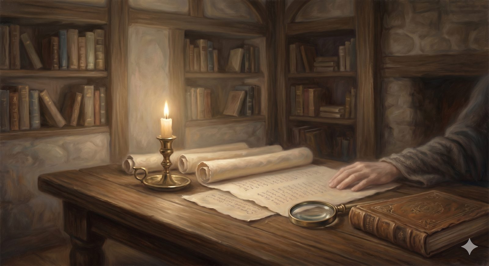

The Examined Record
The room where the Interpreter opens the documents and bids the pilgrim examine them — prophecy, manuscripts, and a record that will not flatter.
"We did not follow cleverly devised myths when we made known to you the power and coming of our Lord Jesus Christ, but we were eyewitnesses of his majesty." 2 Peter 1:16 (ESV)
The Interpreter does not only show his guest pictures; he opens documents, and invites him to examine them. So in this first room the question is the one a thoughtful pilgrim asks almost as soon as the story has gripped him: can I trust the book that tells it? Not "will I make myself believe it," but the ordinary, honest question anyone brings to an old and weighty document — is this legend, or is this the kind of record that can bear the weight of a life built on it?
The Interpreter's answer is not "shut your eyes and trust." It is "open your eyes and look." Three exhibits hang in this room: a prophecy written centuries too early, a manuscript trail unlike any other from the ancient world, and — strangest of all — the record's own refusal to flatter the people who kept it.
The first exhibitA prophecy written too early
Among the more arresting features of the Old Testament are passages that describe events with enough specificity to be tested against what later happened. The clearest hangs here first: the fifty-third chapter of Isaiah, written roughly seven centuries before the crucifixion. In concentrated, unmistakable detail it describes a figure who is despised and rejected, who is pierced for the transgressions of others, who is crushed for their iniquities, who makes himself an offering for guilt and is silent before his accusers — and who, after his death, is vindicated and "sees his offspring."
The honest skeptic has a reasonable first move here: perhaps this was written after the events, read back onto them. So it matters that messianic readings of this passage existed within Judaism before Christ — interpretive fragments among the Dead Sea Scrolls apply servant-language to a coming anointed one, and the manuscript tradition fixes Isaiah's text centuries before Jesus was born. This is not a Christian forgery slipped in after the fact; it is a Jewish text, demonstrably ancient, describing a pattern that the gospel then claims was fulfilled. You are not asked to find that conclusive. You are asked to find it striking — striking enough to keep reading.
📖 The Scripture behind this Direct / Entailed›
The claim: Isaiah 53, written centuries before the crucifixion, describes a figure who suffers vicariously — pierced for others’ transgressions, made a guilt-offering, and vindicated after death — a pattern the gospel claims Jesus fulfilled.
- Isaiah 53:5 (ESV) — “But he was pierced for our transgressions; he was crushed for our iniquities; upon him was the chastisement that brought us peace, and with his wounds we are healed.”Substitution stated plainly: his suffering is for the sins of others.
- Isaiah 53:10–11 (ESV) — “when his soul makes an offering for guilt … Out of the anguish of his soul he shall see and be satisfied.”A guilt-offering, followed by vindication and life after the anguish of death.
- Acts 8:32–35 (ESV) — “The passage of the Scripture that he was reading was this … [Isaiah 53] … and beginning with this Scripture he told him the good news about Jesus.”The New Testament itself reads Isaiah 53 as fulfilled in Jesus.
The case for Entailed. That the figure is Jesus specifically is a claim of fulfillment, and fulfillment is by nature an inference — it is established by comparing Isaiah’s details (pierced, silent before accusers, numbered with transgressors, buried with the rich, vindicated after death) with the gospel record, and confirmed by the New Testament’s own use of the text (Acts 8, where Philip begins from this very passage to preach Jesus). The identification is therefore good and necessary consequence rather than a bare reading of Isaiah in isolation. The page’s own restraint matches this: it asks you to find the prophecy ‘striking,’ not to treat it as a knock-down proof.
Where they meet. The substitution is direct; the identification of Jesus as the servant is entailed and confirmed by the apostles’ own reading. Both together make Isaiah 53 the cornerstone the page treats it as.
Honesty requires noting a real interpretive divide: some Jewish readers take the servant corporately (as Israel); the Christian reading takes it of an individual, and the gospel’s claim is that the individual came. Your reviewers may wish to weigh this directly.
In plain terms
The point of the prophecy exhibit is not to "prove" Christianity with a knock-down argument. It is to unsettle the lazy assumption that the Bible is obviously just legend. A legend does not usually describe its hero's death in detail seven centuries early, in a document its opponents preserved.
The second exhibitA manuscript trail unlike any other
The next exhibit is the documents themselves — how many, how early, how consistent. Set beside any other work of antiquity, the New Testament's manuscript record is in a category of its own: thousands of Greek copies, with portions dated within a couple of generations of the events, against the handful of late copies we accept without complaint for, say, the histories of Tacitus or the wars of Caesar. The sheer abundance means the text can be cross-checked against itself with a confidence no other ancient document allows.
Two cautions keep this exhibit honest, and the Interpreter names them rather than hiding them. Abundance of copies is not the same as proof of the events they describe — a well-attested text can still report things a skeptic will dispute; what the manuscripts establish is that we are reading, to a high degree of certainty, what the authors actually wrote, not a corrupted later invention. And the variations among the copies, which sound alarming when first heard, are overwhelmingly trivial — spelling, word order, obvious slips of the pen — with no point of Christian doctrine hanging on a disputed reading. The record we have is not a game of telephone. It is a remarkably stable text, early and many times confirmed.
📖 The Scripture behind this Historical›
The claim: The manuscript abundance and the ‘criterion of embarrassment’ (a record that refuses to flatter its heroes) are reasons to take the New Testament seriously as historical testimony.
- 2 Peter 1:16 (ESV) — “For we did not follow cleverly devised myths … but we were eyewitnesses of his majesty.”The writers claim eyewitness testimony, not legend — the kind of claim history can weigh.
- Luke 1:1–4 (ESV) — “just as those who from the beginning were eyewitnesses … having followed all things closely … that you may have certainty.”Luke presents his Gospel as investigated testimony aimed at verifiable certainty.
Rests on historical evidence and scholarship, not on a chain from Scripture; the verses establish only that the writers offered checkable testimony.
The third exhibitThe record that will not flatter
The strangest exhibit in the room is the one most easily overlooked, and the Interpreter saves it for last because it persuades in a different way. A manufactured religion presents its heroes as heroes. This book does the opposite, with a consistency that is itself a kind of evidence.
Consider the roll of its great figures, as the record actually keeps it. Abraham, the father of faith, lies about his wife to save his own skin — twice. Moses, the lawgiver, loses his temper and is barred from the land he spent his life walking toward. David, the man after God's own heart, abuses his power catastrophically and arranges a man's death to cover it. Peter, the rock on which the church is built, denies even knowing Jesus three times on the worst night of his life. The inner circle of disciples argues about which of them is greatest — on the night before the crucifixion. The pattern reaches past the men: Rahab keeps both her faith and her trade named plainly in the genealogy of Jesus; the first witnesses of the resurrection are women, in a culture that discounted their testimony, their names preserved anyway.
Historians have a name for the principle at work: the criterion of embarrassment. Material that embarrasses the people who wrote and preserved it is more likely to be authentic, because no movement invents stories that make its own founders look faithless, cowardly, or compromised. A tradition curating its image would have edited these stories. This one did not — which suggests a community more committed to telling the truth than to looking good, and a God, as the curriculum elsewhere puts it, who is not embarrassed by the record.
A manufactured religion flatters its heroes. This book buries its greatest men in their failures — and keeps the women's testimony the culture would have thrown away.
None of these three exhibits, the Interpreter is careful to say, forces faith. They are not designed to. They are designed to clear away the false certainty that the Christian story is obviously legend, and to make the honest inquirer willing to do the one thing the next room asks: to examine the central claim itself, the one on which everything else stands or falls.